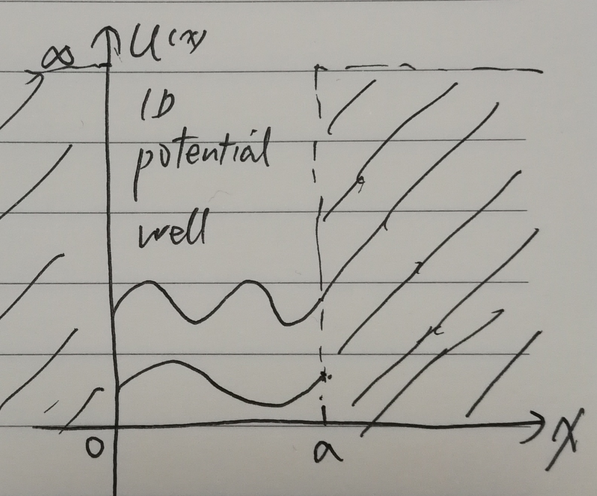
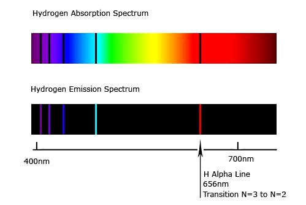

Don’t consider the quantum mechanics is how far from you. The beautiful colors you see in the world are actually light quantum beams that excited under the law of quantum mechanics. Here we will start from the very basic quantum concepts. Then we will discuss the isolated and continuous energy spectrums in quantum mechanics.
Matter wave
Is an electron a wave or a particle, that is a problem! The idea of matter wave (or called Quantum/de Broglie wave) was first introduced by Prof. Louis de Broglie. Where he proposed that actual particles/objects also have wave-like behaviors. This wave of real object is the so called “matter wave” or “de Broglie wave”.
Einstein’s relation for photon
Actually the idea of matter wave is an extension from the photon quantum theory first proposed by Einstein to explain the photoelectric effect [6].
de Broglie’s relation for particle
Extension to de Broglie relation as:
Where the reduced Planck constant is , is the original Planck constant [5]. The angular velocity is (frequency ). Consider the relation between wave vector and wave length , we also have the relation:
Later, the wave property of real particles (electron, etc) were proved by many experiments[1] [2]. Here we note the matter wave function as . It represents the probability of a particle appears at a certain space-time. However, the matter wave function is a complex function, only its absolute value have the real meaning of probability. It also satisfies the conservation condition as: . However the conservation of probability only applies to the discrete energy spectrum of particles. For the continuous energy spectrum, the integration is not conserved, because the probability function still have finite value even at infinite location.
Uncertainty principle
If you rewrite the wave length equation of matter wave as: You will see a shadow of uncertainty principle. Heisenberg gives a more accurate definition of uncertainty principle as:
Which means the product of particle position error and momentum error is big than a limited value. The accurate measurement of position (smaller ) always lead to bad measurement of momentum (bigger ). Many similar relations are also called uncertainty principle if they share the key idea of Heisenberg.
Schrödinger equation
In order to describe matter wave mathematically, Schrodinger introduced a wave equation, which is the later famous Schrodinger equation. The first concept must be cleared is that Schrödinger equation is not derived from any other basis. Like the Newton’s law, Schrodinger equation is the first principle basis for all the other derivations [3]. So what we need to do is just apply the Schrodinger equation in various conditions. The general form of Schrodinger equaton is:
Where is the Hamilton operator that determines the system energy [4].
Quantum operators
There are several import quantum operators need to be addressed.
- Hamilton operator
Which have the structure of , where T is kinetic energy, U is potential energy. Hamilton operator related to the total energy of the quantum system.
- Momentum operator
Quantum energy spectrum
For a particle in an external potential field , the Schrödinger equation is:
Then we use this particle as an example to examine the property of continuous and discrete energy spectrum. Here we consider the case of free particle in space without external field (). Then the Schrodinger equation shall be:
For this equation, if the potential energy U do not consist time, then the general solution can be guessed to have this format: . If we put this general solution into the Schrodinger equation, we can split it into two equations by separating the variables.
\begin{array}{l} \frac{i\hbar}{f(t)}\frac{df}{dt}=\frac{1}{\psi_E(\vec{r})}[-\frac{\hbar^2}{2m}\nabla^2 + U(\vec{r})]\psi_E = E (constant)\\ \Rightarrow \left\{ \begin{array}{l} \frac{i\hbar}{f}\frac{df}{dt} = E\\ [-\frac{\hbar^2}{2m}\nabla^2 + U(\vec{r})]\psi_E = E\psi_E \end{array} \right. \end{array}From the solution of the first equation we can find the time component of the function has the form . Thus we can guess the general solution of Schrodinger equation as . The second equation that do not contain time explicitly is the energy eigen equation of matter waves. Which is usually rewritten as:
Continuous energy spectrum
Mathematically, any value of energy E do relates to a solution to the above eigen equation of matter wave. Thus in the free space without confinement (potential ), continuous energy spectrum is produced. However, with boundary confinement, only some discrete energy (eigen) values relate to meaningful solutions to the eigen equation of matter wave. Thus the discrete energy spectrum is produced.
Discrete energy spectrum
To better understand the discrete energy spectrum, we discuss it with several cases of potential confinement.
Particle in a potential well
Suppose the we have a particle in an infinite deep 1D square potential well [8]. The potential distribution is:
{width=300px}
In this well (), potential energy , the energy eigen equation for the particle becomes: . This is an 2 order ordinary differential equation. If we set , then the equation can be rewritten as: . Suppose the solution has the form , then we can get . Since the quantum wave function is a complex function. We can set the general solution directly as: . Then we consider the boundary condition, in range , the potential is infinitely large, the value of the matter wave function should be 0. Thus on the edge we have the confinement condition: . If we put these two conditions into the general solution we can get :
Solve this equation we can get: , , which means . Thus the related energy is:
Which means the energy eigenvalue is not continuous, they are discrete values. This can also be called as discrete energy spectrum.
Hydrogen atom energy spectrum
The case of Hydrogen atom’s energy spectrum involves solving the Schrodinger equation for the Coulomb potential in the 3D space. It is a bit complicated, however it could still be solved analytically. The details to solve this equation is not presented here. We just present some very important and interesting results. The discrete energy spectrum of Hydrogen atom by solving the Schrodinger equation are:
Where is called the Bohr radius. n is the major quantum number. The related eigenfunction solution is: , the particular form of the function and are not to be presented here. From this we can see the once important energy levels hypothesis proposed by Bohr [6] to explain the radiation spectrum of Hydrorgen can be wonderfully derived by solving the Schrodinger equation. This is the power and beauty of math and physics.
Mystery of colors
{width=350px}
Here is an absorption and emission spectrum of Hydrogen atom [7]. From quantum mechanics we now know that lights (photons) are actually produced by the transmission of electrons between different energy levels on the atom’s discrete energy spectrum. The color of the light is determined by the wave length of the photon. And the photon energy is discretely determined by the atom energy spectrum. Thus it’s clear that the color of an object is determined by the law of quantum mechanics. You can see from the beautiful colors that quantum physics are actually not far from us.
Reference
[1] https://en.wikipedia.org/wiki/Matter_wave
[2] 程守洙，江之永，主编，普通物理学，高等教育出版社，3rd.
[3] https://en.wikipedia.org/wiki/Schrödinger_equation
[4] L. Landau, Lifshicz, “Landau’s physics series: Quantum mechanics”
[5] https://en.wikipedia.org/wiki/Planck_constant
[6] https://en.wikipedia.org/wiki/Bohr_model
[7] http://cronodon.com/images/Hydrogen_spectra.jpg
[8] 曾谨言，量子力学教程，科学出版社，2003.